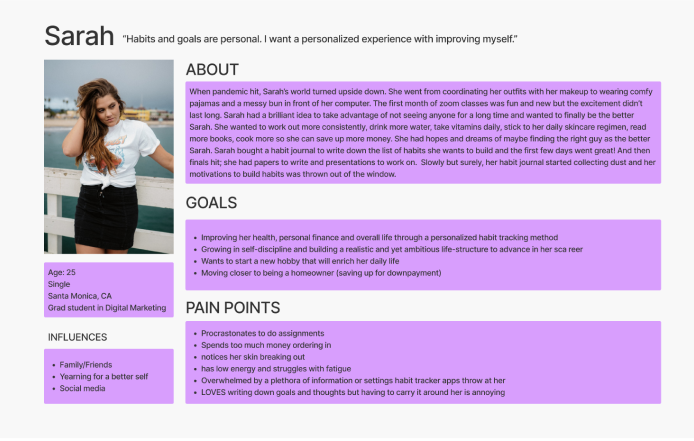
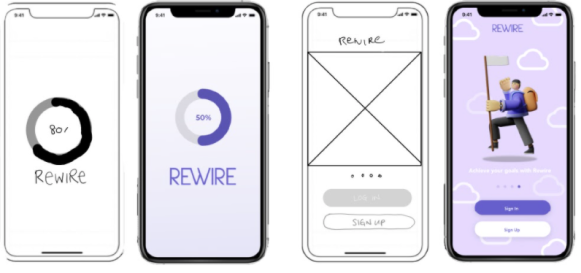
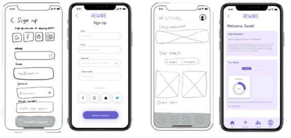
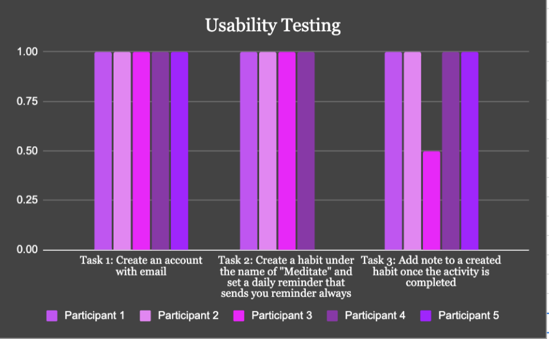

Role
UX researcher/ Designer
Summary
Rewire is a psychology-based habit tracker designed to help users improve their lifestyle and achieve their goals by rewiring the brain to establish healthy habits and promote consistent and permanent change.
Problem/Solution
Individuals who want to improve their lifestyle are growing increasingly frustrated with unsuccessful attempts at achieving their goals due to lack of time, energy, consistency and accountability. Current habit reinforcing tools have over complicated and intricate designs that fail to provide an avenue for users to manually write their goals. We believe a habit reinforcing tool can help individuals improve their lifestyle, achieve their goals by rewiring brain to establish healthy habits and promote consistent, permanent change.
Phase 1: User Research

Our research process consisted of five user interviews, 16 surveys and a competitive analysis of direct and indirect competitors. after we gathered the data we synthisized it by conducting creating an affinity diagram.
Phase 2: Definition & Synthesis
With the information gathered from research we were able to create the user persona Sarah, a digital marketing grad student aiming to improve health and personal finance.
Phase 3: Ideation


To ideate the findings we conducted and "I like, I wish, What if" diagram as well as a prioritization matrix. From our”I like, I wish, What if” diagram we discovered that it was important to use psychology based insights, display Sarah’s progress and allow her to connectand compare with other users, track and calculate a budget, journal/log process, and have reminders to complete and log goals. Through the priority matrix the two features we ecided must be included are psychological insights and reminders to keep the user on track.
Phase 4: Prototyping (low-hi)
 While working on our prototype we created a user flow that outlined Sarah's process to create an account, create a habit, and log their progress. The croup individually created paper prototypes and combined the best features to develop our low and high fidelity prototype.
Phase 5: User Testing + Outcomes
To test our app we created a task flow outlining three tasks: create an account, create a habit and set a reminder, and write and/or type a reflection note. each task had an average success rate of at 90%.
Phase 6: Conclusion + Future Opportunities
While completing this prject we learned to choose fewer persise features to develope then add later on.